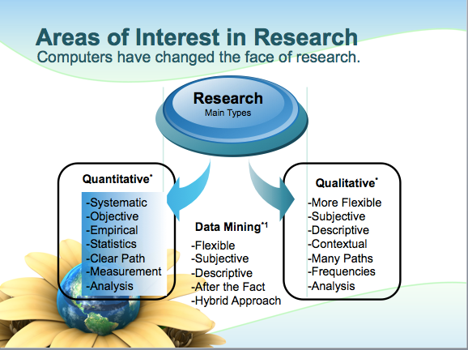
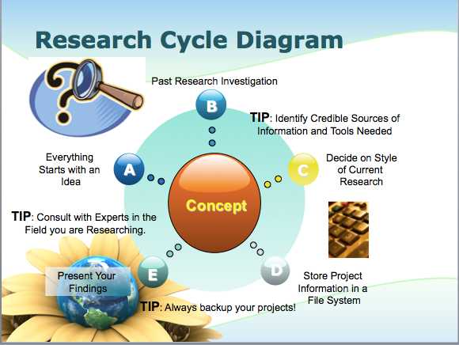

- Attendance
- Goals
- Computer Review
- Math Review
- The Scientific Method
- Chapter 1
- Next Week
Soc303 Day 2 Review
Math, science, and key concepts
Sherri Verdugo, M.S.
Sociology Instructor, CSUF
Topics
Statistics
Brief definition of Statistics:
The subject of statistics deals with techniques for collecting, analyzing, and drawing conclusions from data. In science, or any subject, even psychology, you must know how to read the literature or how to interpret data. Statistics is your key, to knowing when you are given false data--or, for example, if that new medication really works.
Source: Statistical Methods, Eighth Edition by George W. Snedecor and William G. Cochran.
Goals for the Class
- Primary Goal
Understand the relationship between data and statistical analysis.
- Relationship of Topics
- Everything is related in this course through concepts.
- These concepts are applied to actual real world data to generate information.
- We want to increase the confidence in math, statistics, and the ability to understand information that is presented to you.
Computer Review
During the course of the semester, you will be asked to be able to use the following programs as a minimum at a basic level:
- MS Word or comparable program for Mac (i.e. Pages)
- MS Excel or comparable program for Mac (i.e. Numbers)
- SPSS Version 21
Computer labs are available on campus and via remote login
http://www.fullerton.edu/it/services/vcl/available_software.asp
Additional Help for students
If you are stuck with a particular concept for the course or dealing with a computer, you can always try Google or emailing me. You are always welcome to visit me during office hours if you are still unsure about something related to the course. In addition, the University Learning Center is a great resource.
Location: PLN 2nd floor
Hours: Mon-Thu 9:00 a.m.-7:00 p.m.; Fri 9:00 a.m.-12:00 p.m.
Services: The University Learning Center provides tutoring in select lower division, general education classes. The ULC is appointment-based, but walk-ins are taken based on tutor availability. Other services include supplemental instruction, conversation/pronunciation tutors, study groups, on-line writing tutors, academic success workshops, and academic support services for graduate students.
Phone: (657) 278-2738
Word Problems? Not a problem.
In statistics we deal with word problems like this one:
Eleanor scores 680 on the Mathematics part of the SAT. The distribution of SAT scores in a reference population is Normal, with mean 500 and standard deviation 100. Gerald takes the American College Testing (ACT) Mathematics test and scores 27. ACT scores are Normally distributed with mean 18 and standard deviation 6. Assuming that both tests measure the same kind of ability, who did better?
- Eleanor
- Gerald
This is a math question that asks you to take multiple components and use your math skills to solve the problem. In some cases, algebra is involved.
The best way to compare their performance is to calculate their standardized scores.
\[z_E = \frac{680 - 500}{100} = 1.8\] \[z_G = \frac{27 - 18}{6} = 1.5\]
Since, Eleanor has a higher standardized score, we can conclude that Eleanor did better!
Math Review
In the problem on the slide before, we had to look at dealing with fractions and order of operations. Statistics is a math driven course, that means that the rules of math apply each time we work with a statistical concept to derive an answer. If you are concerned about math and want an easy refresher, this site is a great place to start:
Link: http://www.ixl.com/math/algebra-1
For now, we will look at some key concepts that should help you gain math confidence.
Order of Operations
- Parentheses and absolute value bars
- Multiplication and division
- Addition and subtraction
Order of operations with rational numbers
- Multiplication and division
- Addition and subtraction
As the class progresses on, look for more helpful math items and pay attention to the formulas presented. The math boot camp will run during my office hours during the second and third week. If you plan on attending, please let me know what topics you would like to cover. I will cover as many as I can during the time permitted.
In addition, I will provide a detailed pdf or slides for the equations and topics covered in this class...including math concepts covered.
The Scientific Method
A series of logical steps that, if followed, help minimize any distortion of facts stemming from the researcher's personal values and beliefs.
| Step | Description |
|---|---|
| 1. Purpose/Question | What do we want to learn |
| 2. Research | Evidence based |
| 3. Hypothesis | Educated guess (2 parts: null & alternative) |
| 4. Experiment | Test a procedure, idea, medication |
| 5. Analysis | Data |
| 6. Conclusion | Was your hypothesis correct |
The Scientific Method

The Scientific Method Continued

The Scientific Method Continued

Chapter 1
Key Concepts
| Question Type | Definition |
|---|---|
| Empirical | Questions pertaining to "what is" |
| Normative | Questions pertaining to "what ought to be" |
Both types of questions are of interest to researchers.
| Term | Definition |
|---|---|
| Scientists | People engaged in research. |
| Hypotheses | Statements about phenomena being studied |
| Alt. Hypothesis | Statement of interest to investigate |
| Null Hypothesis | Counter statement of interest |
| Social Sciences | Empirical study of social phenomena |
Chapter 1
Key Concepts Continued
| Term | Definition |
|---|---|
| Cross-tabulation | Method of presenting data for testing |
| Concepts | Ideas |
| Variables | Concepts that vary or change |
| Deduction | Process of reasoning from general to specific |
| Experiment | Test of hypothesis: laboratory conditions |
| Scientific Law | Hypotheses w/ high probability of being correct |
| Data | Information used to verify a hypothesis |
| Datum | Single data point (information) |
Chapter One
Key Concepts Continued
| Term | Definition |
|---|---|
| Theory | Set of interrelated hypotheses taken together |
| explaining some phenomenon | |
| Main diagonal | Diagonal line from upper left to lower right |
| Pos. Relationship | As one increases the other item increases |
| Off diagonal | Clustering on a diagonal from upper right to the |
| lower left | |
| Inversely related | As one decreases the other item decreases |
| Cause | One phenomenon being studied brings about the other |
| Temporal Sequence | One phenomenon being studied occurs earlier in time |
| Dependent Var. | Variable being caused/explained |
| Independent Var. | Variable doing the explaining |
| Units of Analysis | What we actually measure or study |
Quick Review Moment.
In statistics we deal with many concepts:
True or False. Hypotheses are made up of a pair of statements that say the opposite thing. The statements are mutually exhaustive and mutually exclusive.
- True
- False
To look at testing something as true, you have to look at both sides of the story.
True. The answer is that it is made up of two components
\[H_0: Null Hypothesis\] \[H_A: Alternative Hypothesis\]
Next Week
Math Bootcamp
Brief Review
Chapter 2
Prepare for Homework 1
Bonus: Review what we covered
This is your section for writing notes. I hope you enjoy the material, I understand it is dense, but it has real world applications. Welcome to the wonderful world of statistics and your journey of learning.
The Scientific Method
Purpose/Question:
Research:
Hypothesis:
Experiment:
Analysis:
Conclusion
Key concepts:
Types of Questions
_Question Type _
Empirical
Normative
What fields do we see these types of questions in?
Basic Terms
Scientists
Hypotheses
Alternative Hypothesis
Null Hypothesis
Social Sciences
Cross-tabulation
Concepts
Variables
Basic Terms
Deduction
Experiment
Scientific Law
Data
Datum
Theory
Basic Terms
Main diagonal
Positive Relationship
Off diagonal
Inversely Related
Cause
Temporal Sequence
Dependent Variable
Independent Variable
Units of Analysis
Statistics